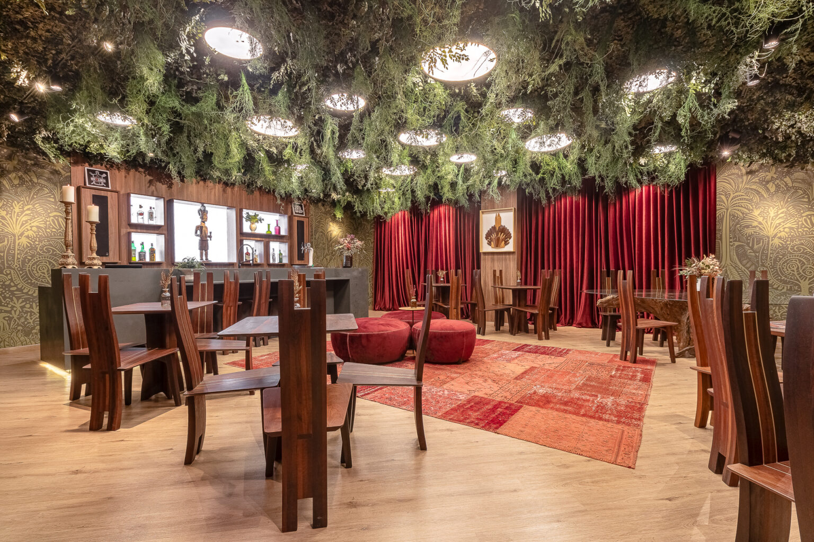
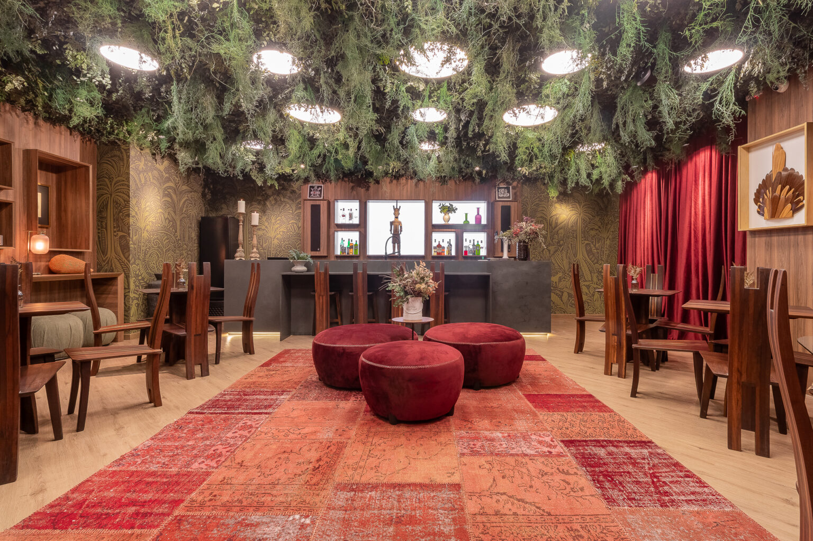
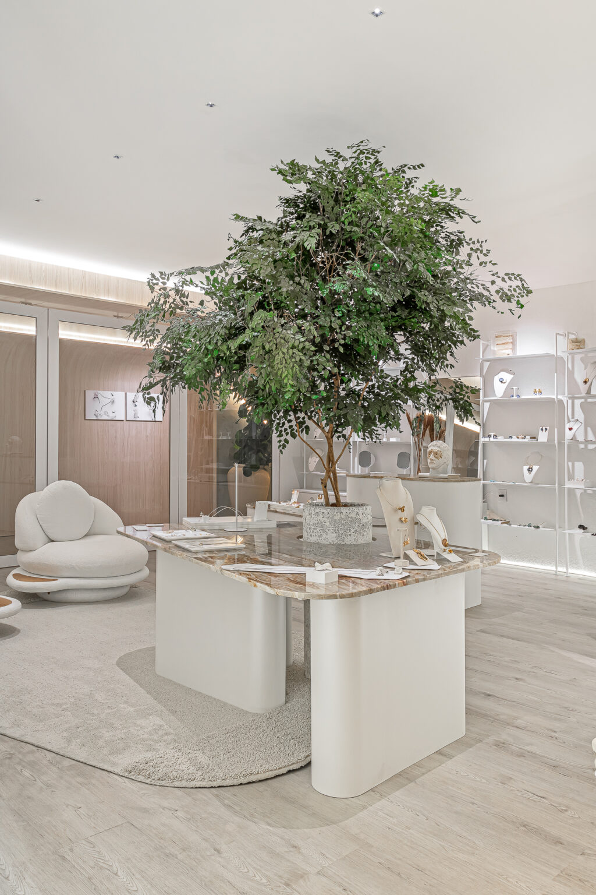
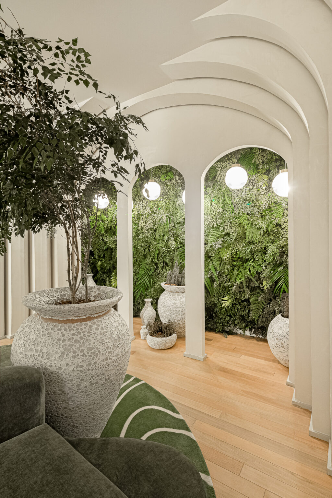
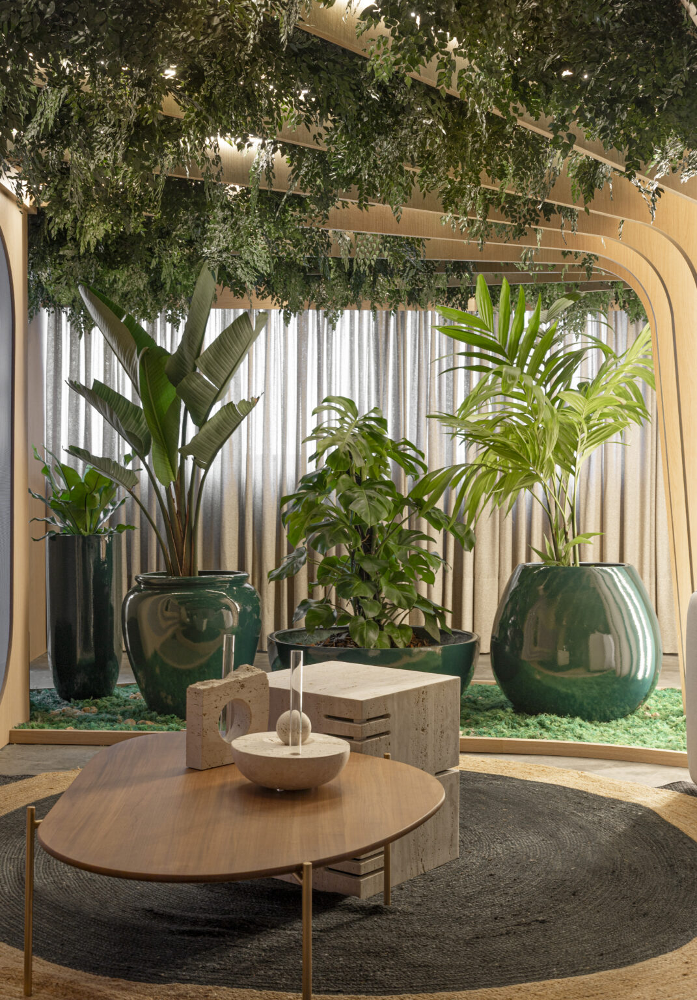

CASACOR SC 2025 · Augen Arquitetura
Foto: Lio Simas

Botânica 100% Natural Preservada · Joinville & Curitiba
Natureza de verdade no seu ambiente, sem a rotina de cuidar de plantas.
Jardins verticais, árvores e musgo preservados, feitos sob medida para casas, empresas e projetos de arquitetura em Joinville, Curitiba e região.
CASACOR
Presente na CASACOR SC 2025
Mostra Itapema · Augen Arquitetura
3 anos
De projetos executados
Produção autoral em Joinville
40 km
Joinville, Curitiba e região
Atendimento com equipe própria
CASACOR SC 2025
✦
Augen Arquitetura
✦
Residências Alto Padrão
✦
Sedes Corporativas
✦
Clínicas & Boutiques
✦
Hotéis & Gastronomia
✦
Escritórios de Arquitetura
✦
01 / A Essência da Preservação
Uma empresa de Joinville que leva o verde para onde a planta viva não chega.

CASACOR SC 2025 · Augen Arquitetura
Foto: Lio Simas
“Não é planta artificial. É folha, caule e musgo colhidos no auge do seu frescor e estabilizados no tempo.”
Por meio de um cuidadoso processo biológico de preservação, a seiva natural da planta é substituída por um conservante ecológico. O resultado mantém a textura macia, o aroma suave de mata e a tonalidade autêntica de uma folha viva — sem demandar água, luz solar ou podas.
Cada painel, árvore escultural ou composição em musgo é desenhado e produzido sob medida em nosso ateliê em Joinville, respeitando a arquitetura, a acústica e a iluminação de cada espaço.
Em 2025, assinamos a botânica preservada do ambiente “Conexão entre Caminhos” na CASACOR Santa Catarina, em parceria com o escritório Augen Arquitetura.

100% Natural
Toque flexível, aparência orgânica real e liberdade para instalar em halls internos, lavabos, salas de reunião e pés-direitos duplos sem sol.
02 / O Que Criamos
Botânica autoral sob medida.
Passe o cursor sobre cada solução para visualizar nosso trabalho ou solicite atendimento direto para o seu projeto.
01
Jardim vertical preservado
Painéis botânicos exuberantes com mix de folhagens, samambaias e avencas naturais preservadas. Sem irrigação, sem infiltração e com excelente conforto acústico.
02
Árvores preservadas
Árvores esculturais montadas artesanalmente com troncos naturais tratados e copas frondosas, desenhadas na altura e proporção exatas do seu ambiente.

03
Musgo preservado
Quadros vivos, nichos retroiluminados e superfícies orgânicas em musgo bola e plano. Textura aveludada e relevo tridimensional minimalista.

04
Projetos para arquitetos e designers
Atendimento técnico dedicado a escritórios: leitura de detalhamentos em marcenaria e gesso, estudo de volumetria, amostras físicas e execução fiel ao render.

03 / Por Que Escolher o Preservado
A presença sensorial da mata viva, com a praticidade que a arquitetura contemporânea pede.
I.
Planta natural, não artificial
Sem brilho plástico ou folhas repetidas de fábrica. Cada ramo é autêntico, preservado com sua anatomia e caimento originais.
II.
Cuidado mínimo no dia a dia
Não exige rega, adubação ou poda periódica. A conservação resume-se a retirar o pó superficial ocasionalmente com espanador macio ou jato de ar frio.
III.
Instalação limpa e sem obra
Sem terra, impermeabilização, ponto hidráulico, dreno ou iluminação UV específica. Ideal para ambientes já prontos e mobiliados.
IV.
Sem insetos nem mofo
Como não há terra úmida nem matéria em decomposição, as plantas preservadas não atraem mosquitos, formigas ou fungos para dentro do imóvel.
V.
Feito 100% sob medida
Desenhamos a densidade, a paleta de verdes e o relevo de acordo com o mobiliário, recortes de marcenaria, curvas e iluminação do projeto.
VI.
Equipe própria e local
Do primeiro atendimento à instalação final em Joinville, Curitiba e litoral catarinense, tudo é executado pela nossa equipe especializada.
04 / Acervo Selecionado
Obras entregues.
Role para navegar pela galeria → Deslize para o lado →
05 / Aplicações Sob Medida
Para quem busca permanência e estética impecável.
Residencial
Orçar para minha casa
→
Sua casa
Para salas com pé-direito duplo, lavabos, halls de entrada, escadas ou apartamentos de praia onde você deseja o aconchego do verde natural mesmo viajando por semanas.
Corporativo & Comercial
Orçar para minha empresa
→
Empresas
Recepções corporativas, salas de conselho, clínicas médicas, restaurantes e hotéis. Transmita sofisticação e bem-estar biofílico sem custos mensais de jardinagem ou trocas constantes de vasos.
Parceria Técnica
Especificar em projeto
→
Arquitetos
Apoiamos seu escritório desde a especificação até a entrega final. Enviamos mostruários, analisamos plantas e cortes, e garantimos que o cliente receba exatamente a estética planejada no 3D.
06 / Como Trabalhamos
Um processo fluido, do primeiro olhar à instalação limpa.
01
Diagnóstico Rápido
Conversa no WhatsApp com fotos e medidas
Você nos envia uma foto ou vídeo do ambiente (ou a planta do arquiteto) junto com as medidas aproximadas. Entendemos seu estilo, a incidência de luz e o efeito desejado.
02
Curadoria Botânica
Projeto e orçamento detalhado
Definimos a composição ideal de folhagens, musgos ou espécies arbóreas e apresentamos uma proposta transparente, com prazos claros e visita técnica quando necessário.
03
Ateliê Próprio
Produção sob medida em Joinville
Boa parte da composição é pré-estruturada artesanalmente em nosso ateliê em Joinville, selecionando ramo por ramo para que a instalação no seu imóvel seja rápida e silenciosa.
04
Entrega Impecável
Instalação pela nossa equipe
Nossa própria equipe realiza a montagem final e o acabamento orgânico no local, deixando o ambiente completamente limpo e pronto para ser vivido no mesmo dia.
07 / Perguntas Frequentes
Transparência sobre a planta preservada.
Explicamos com clareza como funciona a tecnologia de preservação para que você tenha certeza de que ela é a escolha certa para o seu espaço.
Tirar outra dúvida no WhatsApp →Sim, 100% natural. Não utilizamos plantas de plástico ou tecido. As folhagens, musgos e galhos são plantas reais que passam por um processo de estabilização biológica, no qual a seiva natural é substituída por uma solução ecológica conservante que mantém a maciez, a textura e o aspecto de folha fresca.
Dura muitos anos mantendo sua beleza e flexibilidade quando instalada em ambiente interno, protegida da incidência direta de sol e do contato com água ou umidade excessiva.
O cuidado é mínimo: não deve ser regada, podada nem pulverizada com água. Basta remover o pó superficial de tempos em tempos com um espanador eletrostático macio ou secador de cabelo no jato frio e suave.
Não. Você não precisa de ponto hidráulico, ralo, impermeabilização nem iluminação específica para fotossíntese. A iluminação cênica comum de arquitetura (spots em LED) já valoriza perfeitamente o relevo das plantas.
Não. Como não há terra, água parada ou seiva viva, o jardim preservado não atrai mosquitos, formigas nem desenvolve fungos ou mofo, sendo seguro inclusive para clínicas, consultórios e áreas gastronômicas.
Nossa sede fica em Joinville (SC) e atendemos com equipe própria Joinville, Curitiba e cidades em um raio de até 40 km de ambas as regiões (incluindo litoral norte catarinense como Balneário Camboriú, Itapema e Itajaí). Consulte-nos para projetos especiais em outras localidades.
É simples e rápido: clique em qualquer botão de WhatsApp desta página e envie uma foto do local com as medidas aproximadas (largura x altura). Com base nisso, elaboramos uma estimativa personalizada para o seu projeto.
Sim, temos grande orgulho de trabalhar lado a lado com arquitetos, designers de interiores e paisagistas — incluindo nossa participação na CASACOR SC 2025 com a Augen Arquitetura. Oferecemos suporte técnico completo para especificação.
Atendimento Exclusivo pelo WhatsApp
Vamos levar o verde para o seu espaço?
Envie uma foto ou as medidas do seu ambiente e receba uma proposta sob medida da nossa equipe em Joinville e Curitiba.
Pedir orçamento no WhatsApp